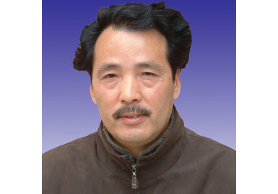

作者：Steven
熟悉审计局领导，不仅熟悉其名字，还要熟悉其喜好。安康审计局网站：http://www.aksj.gov.cn/

5大领导，杜保华（局长）、刘永康（副处长）、陈国进（副局）、陈建国（副局）、张诚（纪检）。一杜一刘两陈一张。
杜从石泉起来的。刘的资格较老，1988年即在市审计局工作至今。有可能陈建国即是他一手提拔上来的。陈建国、陈国进接刘永康的班儿。
这里选取的均是安康乃至全国着名的政治精英，从他们身上，学习他们的优点。
市 长：方玮峰
副市长：徐启方 王安利 巨拴科 薛建兴 张全明 陈明 邹顺生
市政府组成部门 □ 安康市发展和改革委员会(市重点建设项目办公室、市物价局) □ 安康市经济委员会(市政府国有资产监督管理委员会 、乡企局) □ 安康市教育局 □ 安康市科学技术局 □ 安康市公安局 □ 安康市监察局 □ 安康市民政局(市民族宗教事物局) □ 安康市司法局 □ 安康市财政局 □ 安康市人事局 □ 安康市劳动和社会保障局 □ 安康市国土资源局 □ 安康市城乡建设局(市人民防空办公室) □ 安康市交通局 □ 安康市水利局 □ 安康市农业局 □ 安康市林业局(市山川秀美工程领导小组办公室) □ 安康市商务局 □ 安康市招商局 □ 安康市文化文物局(市新闻出版局) □ 安康市卫生局 □ 安康市人口和计划生育局 □ 安康市审计局 □ 安康市环境保护局 □ 安康市广播电视局 □ 安康市体育局 □ 安康市统计局 □ 安康市粮食局 □ 安康市旅游局 □ 外事办公室、侨务办公室 □ 安康市信访局 市政府直属行政机构 □ 安康市安全生产监督管理局 议事协调机构常设的办事机构 □ 安康市农业综合开发领导小组办公室 □ 市双创指挥部办公室 直属事业机构 □ 安康市地方志编纂办公室 □ 安康市盐务管理局 □ 市科技工业园区管理委员会 □ 安康市移民开发局 中省驻安单位 □ 安康市国税局 □ 安康市地税局 □ 安康市养老保险经办处 □ 安康市质量技术监督局 □ 安康市气象局 □ 安康市无线电管理处 □ 安康市工商行政管理局 □ 安康市食品药品监督管理局 □ 中国人民银行安康市中心支行 □ 国家统计局安康调查队 □ 中国银行业监督管理委员会安康银监分局 直属集体经济组织 □ 安康市供销合作社
| 马 英（女、回族） | 马 赟 | 马玉安（回族） | |
| 马玉爱（女、回族） | 马明年（回族） | 马明庆（回族） | |
| 王 保 | 王贵锋 | 史 鹏 | 史洪安 |
| 成英存（女） | 朱昌全 | 任红艳（女） | 刘光琴（女） |
| 刘军民 | 刘建明 | 纪云鸿 | 杜保华 |
| 杨 忠 | 杨运早 | 杨佑金 | 李 均 |
| 李 颉（女） | 李全成 | 李有明 | 李华江 |
| 李春临 | 李辉忠 | 吴少华 | 何向忠 |
| 但亚兰（女） | 余祖财 | 邹安生 | 汪建信 |
| 汪金慧 | 张 宁 | 张 辉 | 张 斌 |
| 张 斌（建民镇） | 张文学 | 张运琴（女） | |
| 张明俊 | 张晓明 | 张新华（女） | 陆 俊 |
| 陈 勇 | 陈兴庆 | 范从顺 | 金富军 |
| 周 清 | 周建明 | 周裕厚 | 胡小军 |
| 荆 钟 | 郝建华 | 郝宪岭 | 侯小琳（女） |
| 耿利明 | 袁子顺 | 袁朝玲（女） | 徐 平 |
| 徐 韬 | 翁 玲（女、回族） | 唐志宏 | |
| 凌明学 | 黄 锋 | 麻清雅（女） | 蒋 平 |
| 蒋福娣（女） | 惠 博 | 程时银 | 鲁宗奇 |
| 谢 蓉（女） | 谭书宝 | 魏开亮 |
| 于春艳（女） | 马文艳（女、回族） | 王化成 | |
| 卢理琴（女） | 朱前平 | 伊发能 | 刘传品 |
| 刘伍林 | 刘修勇 | 杜凤军 | 杨尚武 |
| 李昌生 | 李隆毅 | 余昌华 | 沈 虹 |
| 沈桂兰（女） | 陈 刚 | 陈利华 | 易延高 |
| 周永鑫 | 庞 明 | 胡世宝 | 茹甫文 |
| 钟庆明 | 郭安平（女） | 唐正安 | 黄邦平 |
| 黄晓丽（女） | 董天学 | 焦 艺（女） | 鲍永能 |
| 熊绍祥 | 薛建兴 |
| 王 彪 | 王安利 | 亢岁润 | 叶海东 |
| 冯 玲（女） | 任秀琳（女） | 李 康 | 李世玲（女 |
| 余永娥（女） | 邹顺生 | 沈少武 | 张京国 |
| 陈永烈 | 陈国盛 | 陈泽栋 | 陈帮华 |
| 陈爱春（女） | 陈绪贤（女） | 范先进 | 欧立建 |
| 罗小平 | 胡泽家 | 段吾勇 | 姚佩华（回 |
| 黄常翠（女） | 崔用慧 | 崔光华 | 韩永进 |
| 赖真彩（女） |
| 马云霞（女、回族） | 王晓梅（女） | ||
| 平 博（女、满族） | 田 红（女） | 刘玉泉 | |
| 闫 武 | 余立新 | 邹 明 | 邹成燕（女） |
| 汪时政 | 张全明 | 张绳清 | 陈二玲（女） |
| 陈文贵 | 陈伦宝 | 陈述勇 | 罗长宝 |
| 罗正金 | 周 亮 | 胡凯庆 | 谢四新 |
| 魏荣坤（回族） |
| 丁 华 | 马小静（女、回族） | ||
| 马孝芳（女、回族） | 王 雯（女） | 王忠娥（女） | |
| 王晓江 | 王雪梅（女） | 亢海珍（女） | 卢杰火 |
| 冯尚勇 | 朱必兰（女） | 刘际和 | 孙洪军 |
| 杜少军 | 李兴卫 | 李辉新 | 吴应彦 |
| 吴家治 | 沙阳红（女、回族） | 张 波（女） | |
| 张昌华 | 陈 勇 | 罗雪剑 | 屈善施 |
| 胡昌军 | 赵继民 | 侯在德 | 贾耀全 |
| 晏筱波 | 徐龙仿 | 郭申芝（女） | 高 洪 |
| 龚孝华 | 康俊钦 | 董平安 |
| 马文芳（女、回族） | 马恒昌 | 王汉琳 | |
| 尤自兰（女） | 龙 君 | 伍玉兰（女） | 向 东 |
| 刘列平 | 刘纯海 | 刘修兵 | 杨 涛 |
| 杨大雁（女） | 杨玉鹏 | 李 锋 | 吴德珠 |
| 邱仕君 | 汪本珍（女） | 张天文 | 陈继国 |
| 易吉兵 | 周康成 | 郑光照 | 赵良亭 |
| 袁守平 | 袁泽强 | 曹英忠 | 程维国 |
| 鲁 琦 | 颜加东 |
| 万琴棋（女） | 王友清 | 王雪洁（女） | 巨拴科 |
| 龙云庭 | 田 珍（女） | 向东晓 | 刘永恒 |
| 刘合斌 | 刘明静（女、侗族） | 李本增 | |
| 李泽萍（女） | 别 健 | 吴 平 | 吴兆庆 |
| 吴祥义 | 何万发 | 何邦军 | 张仁莲（女） |
| 陈 俊（女） | 陈世斌 | 陈显耀 | 周 斌 |
| 郑小东 | 屈孝余 | 姜观美 | 徐启方 |
| 郭正明 | 黄 琴（女） | 程家星 |
| 马晓旬 | 王 娟（女） | 王福安 | 邓森田 |
| 龙吉兰（女） | 权群学 | 刘 珺（女） | 江能海 |
| 杨成东 | 李逸强 | 吴 平 | 吴明兰（女） |
| 何少华 | 张 华 | 陈 明 | 陈远平 |
| 陈海燕（女） | 桂明德 | 栗永斌 | 靳义和 |
| 雷生琴（女、回族） | 廖贤平 |
| 丁礼康 | 马 涛 | 王玉芳（女） | |
| 王自霞（女、回族） | 牛全鸿 | 方玮峰 | |
| 邓邦才 | 邓昌琼（女） | 叶生春（女） | 吕正勇 |
| 吕韶力 | 刘阳明 | 杨海波 | 李世禄 |
| 吴万琴（女） | 吴永虎 | 吴胜荣（女） | 何升义 |
| 何民主 | 邹俊杰 | 汪信娥（女） | 张益民 |
| 陆隆敏 | 陈 彪 | 陈小兰（女） | 陈志信 |
| 陈昌学 | 袁治爱（女） | 夏锡宝 | 徐 浩 |
| 梅书林 | 黄 斌 | 黄明文 | 龚道云 |
| 梁汝明 | 屠 琼（女） | 程良军 | 廖坤波 |
| 谭克军 | 薛进利 |
| 卫 东 | 马建明（回族） | 王启武 | 王家成 |
| 王德彩（女） | 田延国 | 刘和兴 | 汤海帮 |
| 杜科持 | 杨宝成 | 李军帮 | 李德平 |
| 吴应德 | 张 莹（女） | 张永富 | 张延平 |
| 陈 军 | 陈 晖 | 陈绪英（女） | 金 剑 |
| 胡承侠（女） | 查 萍（女） | 钟顺虎 | 聂长久 |
| 徐兴刚 | 奚小莉（女） | 郭德林 | 彭友庆 |
| 景文娟（女） | 缪晓红（女） |
| 杨平社 | 郭政强 | 韩德超 |
| 王 侠(女) | 王 彪 | 王永堂 | 王晓江 | 刘代存(女) | 刘建明 | 刘晓兰(女) |
| 祁桂林(女) | 杜凤军 | 杨尊法 | 李 颉(女) | 李保平 吴 | 平(平利) | 黄 玮(女) |
| 吴 平(镇坪) | 吴兴华 | 邱仕君 | 邹 珍(女) | 邹成燕(女) | 邹俊杰 | 胡凯庆 |
| 邹桂花(女) | 张 辉 | 张龙宝 | 张迈曾 | 张明俊 | 周礼博 | 凌明学 |
| 赵东科 | 袁子顺 | 晁俊年 | 徐 平 | 徐铁军 | 郭德林 | |
| 彭随义 | 程 芳(女) | 程楚安 | 鲁 琦 | 曾庆玉(女) | 魏荣坤(回) |
熊邦高 男 第一届市慈善协会会长
骞国政 男 第一届市慈善协会顾问
钟贵庭 男 第一届市慈善协会顾问
段炳甫 男 第一届市慈善协会顾问
范从顺 男 第一届市慈善协会顾问 市人大常委会副主任
张先德 男 第一届市慈善协会副会长 市政协副主席、市委统战部部长
杨宗道 男 第一届市慈善协会顾问
张子美 男 第一届市慈善协会顾问
会 长：
段吾勇 男 第一届市慈善协会名誉会长 市委正厅级咨询
副会长：
谭书宝 男 第一届市慈善协会副会长 市民政局局长
张培祥（常务） 男 第一届市慈善协会常务副会长 汉滨区文化文物广播电视局原 局长
王友根 男 第一届市慈善协会副会长 安康日报社原社长
张会鉴 男 第一届市慈善协会副会长 陕台驻安记者站站长
董长英 女 第一届市慈善协会秘书长 汉滨区文化文物广播电视局原 纪检组长
马昌琪 男 市委宣传部副部长、市文联主席
马恒昌 男 市委副秘书长、办公室主任
马晓旬 男 市政府副秘书长、办公室主任
王友根 男 第一届市慈善协会副会长 安康日报社原社长
吉东明 男 市人大常委会原常务副主任
张 虹 女 第一届市慈善协会理事 市作家协会主席
张永富 男 市人大常委会秘书长
张会鉴 男 第一届市慈善协会副会长 陕台驻安记者站站长
张培祥 男 第一届市慈善协会常务副会长 汉滨区文化文物广播电视局原局长
肖世臻 男 第一届市慈善协会理事 市民政局原助理调研员
邹顺生 男 第一届市慈善协会理事 石泉县委书记
李家强 男 汉滨区新城办事处主任
杜保华 男 第一届市慈善协会理事 市审计局局长
陈新社 男 第一届市慈善协会理事 汉滨区人大常委会常务副主任
杨继泽 男 第一届市慈善协会理事 市广播电视局副局长、网络公司总经理
段吾勇 男 第一届市慈善协会名誉会长市委正厅级咨询
董长英 女 第一届市慈善协会秘书长 汉滨区文化文物广播电视局原纪检组长
谭书宝 男 第一届市慈善协会副会长市民政局局长
廖贤平 男 市财政局局长
毕远堂 男 石泉县慈善协会会长、第一届市慈善协会理事
张永全 男 白河县慈善协会会长、第一届市慈善协会理事
何诗章 男 岚皋县慈善协会会长
宋恩祥 男 汉阴县慈善协会会长、第一届市慈善协会理事
郑 华 男 市慈善协会汉滨区办事处主任、第一届市慈善协会理事
欧昌吉 男 旬阳县慈善协会会长、第一届市慈善协会
马昌琪 男 市委宣传部副部长、市文联主席
马恒昌 男 市委副秘书长、办公室主任
马晓旬 男 市政府副秘书长、办公室主任
王永堂 男 市卫生局副局长、市中心医院院长、第一届市慈善协会理事
王受明 男 市残联原助理调研员
王建涛 男 市供电局汉滨分局局长
冯尚勇 男 市劳动和社会保障局局长、第一届市慈善协会理事
刘正刚 男 市民政局副局长、老龄办主任、第一届市慈善协会理事
刘运发 男 市公路局局长
吉东明 男 市人大常委会原常务副主任
吕正勇 男 市信访局局长
邝鸣钟 男 市财政局政府采购中心副主任
何甫强 男 市公安局副局长
肖世臻 男 市民政局原助理调研员、第一届市慈善协会理事
李仿华 女 市残联理事长
李家强 男 汉滨区新城办事处主任
李晓斌 男 市城乡建设局监察支队政委
李善进 男 市城乡建设局城郊规划所所长
陈太新 男 市人口和计划生育局局长
陈晓虎 男 市水利局副局长、防汛办主任
陈新社 男 汉滨区人大常委会常务副主任、第一届市
邹成燕 女 市妇联主席、第一届市慈善协会理事
邹顺生 男 石泉县委书记、第一届市慈善协会理事
张永强 男 市方志办主任
张永富 男 市人大常委会秘书长
张继方 男 市发展改革委员会副主任、项目办主任
杨 平 男 市人大常委会研究室综合信息科科长
杨 鹏 男 市公安局汉滨分局局长
杨安荣 男 第一届市慈善协会理事
杜保华 男 市审计局局长、第一届市慈善协会理事
杜科持 男 市教育局局长、安康职业技术学院院长、
段吾勇 男 市委正厅级咨询、第一届市慈善协会名誉
胡国庆 女 市财政局社保科科长
郭正明 男 市农发办（扶贫办）主任
徐铁军 男 市交通局局长
崔峻崇 男 市总工会副主席、第一届市慈善协会理事
谭书宝 男 市民政局局长、第一届市慈善协会副会长
廖贤平 男 市财政局局长
王 虎 男 市广播电视局局长、第一届市慈善协会理事
王友根 男 第一届市慈善协会副会长
王建强 男 安康人民广播电台台长、第一届市慈善协会理事
张会鉴 男 陕台驻安记者站站长、第一届市慈善协会
张钧华 女 第一届市慈善协会理事
张培祥 男 第一届市慈善协会常务副会长
杨继泽 男 市广播电视局副局长、网络公司总经理、
李建国 男 安康人民广播电台台长助理
李焕龙 男 安康广播电视报社社长、第一届市慈善协会理事
周盛和 男 市广播电视局调研员、第一届市慈善协会理事
柳花丽 女 汉滨区文化文物广播电视局干部、第一届市慈善协会理事
屈善施 男 安康日报社社长、第一届市慈善协会理事
倪 嘉 男 安康日报社党委副书记、总编
夏亚洲 男 汉滨区文化文物广播电视局局长、第一届市慈善协会理事
梁博泉 男 安康电视台台长
董长英 女 第一届市慈善协会秘书长
蔡学文 男 第一届市慈善协会副会长
薛少刚 男 安康人民广播电台干部、第一届市慈善协会理事
田 平 男 安康鸿龙实业有限公司总经理、第一届市慈善协会理事
江树群 男 安康兴安地产集团有限公司董事长、第一届市慈善协会理事
杨 忠 男 安康莲花食业有限公司总经理、第一届市慈善协会理事
陈忠云 女 安康南方商务有限公司董事长、第一届市慈善协会理事
肖堂林 男 安康市植物油厂董事长、总经理、第一届市慈善协会理事
周元成 男 中国人寿保险公司安康分公司原总经理
郑 平 男 安康城市建设开发有限公司董事长、总经理、第一届市慈善协会理事
胡崇安 男 安康兴科房建集团公司董事长、第一届市慈善协会理事
薛荫明 男 安康泸康酒业集团股份有限公司董事长、第一届市慈善协会理事
袁 康 男 安康水电联合实业有限责任公司总经理、第一届市慈善协会理事
程时银 男 安康恒圣集团公司董事长、第一届市慈善协会理事
童明富 男 安康通用机械有限公司董事长、总经理、第一届市慈善协会理事
熊绍祥 男 安康长兴房建集团公司董事长、第一届市慈善协会理事
张龙宝 男 安康宝业丝绸有限公司总经理
尹 凌 女 市舞蹈家协会主席
白 梅 女 安康中学初中部副校长
张 虹 女 市作家协会主席、第一届市慈善协会理事
李 娜 女 安康汉剧团演员
李慈印 男 安康鼓囊囊乐队队长、第一届市慈善协会理事
邹安生 男 汉滨高级中学校长
袁朝玲 女 汉滨区文化文物广播电视局副局长、安康汉剧团团长
今 玉 女 龙王山龙兴寺住持
陈 军 男 市人大常委会法工委委员、市公证处主任
张 桦 男 陕西江桦律师事务所主任
市长助理、市旅游局局长
市委常委、市委组织部部长
市政协副主席
市委书记、市人大常委会主任
巨拴科，男，汉族，1960年4月生于陕西岐山。九三学社社员，1981年元月参加工作，研究生学历，历任原陕西省科委副主任科员、主任科员、副处长，陕西省科技厅处长。现任安康市人民政府副市长。 省九届政协委员、十届政协常委，九三学社第十二届中央委员，市一届、二届、三届人大代表。
分管与联系市科学技术局（地震办）、环境保护局、商务局，市工商行政管理局、质量技术监督局、烟草专卖局、中国人民财产保险安康分公司、中国人寿保险安康分公司、无线电管理处、电信分公司、移动分公司、联通分公司，市科协。
Copyleft © 2011 Yache's Personal Wiki proudly powered by vimwiki,hosted on github.